My website is about learning how to cook and ordering food online.
The things that inspired me were the websites yummly http://www.yummly.com, waiter on the way https://fortwayne.waiterontheway.biz and food gawker https://foodgawker.com/.
I made my website accessible by adding alt tags, making sure that the colours ddo not strain the eye or make it difficult to read text while still looking aesthically pleasing and i have used headers as well as resizable text on the pages that need it.
I had to consider would the user be able to the recipe that they desire, be able to access the information to be able to make that specific dish. I tried to make sure that it looks presentable on any device.
I feel like the colors of the website work quite well with each other without making it difficult for the user to see text or images. The add to cart button works very well and i like how it line up at the bottom when you click the item.
I feel like the code could be tidied up because the eat.html page still has inline css and javascript. This is because the purchase button was not working at all so i decided just to use inline css and javascript. Also if i could do this project again with extended time i would put videos in the recipe page because it would've helped the user out more than juust plain text.
I used Icons from cloudfare icons.
Bibliography:
w3schools.com, how to make a website
https://www.w3schools.com/howto/howto_make_a_website.asp
w3schools.com, grid row
https://www.w3schools.com/cssref/pr_grid-row-gap.asp
w3schools.com, image transparency
https://www.w3schools.com/css/css_image_transparency.asp
w3schools.com, hr tag
https://www.w3schools.com/tags/tag_hr.asp
https://www.w3schools.com/howto/howto_css_image_text.asp
stackoverflow.com, different color links on smae html page
https://stackoverflow.com/questions/4531208/different-color-links-on-the-same-html-page
w3schools.com, responsive image
https://www.w3schools.com/howto/howto_css_image_responsive.asp
w3schools.com, collapsibles
https://www.w3schools.com/howto/howto_js_collapsible.asp
w3schools.com, responsive text
https://www.w3schools.com/howto/howto_css_responsive_text.asp
w3schools.com, how to filter elements
https://www.w3schools.com/howto/howto_js_filter_elements.asp
w3schools.com, modals
https://www.w3schools.com/howto/howto_css_modals.asp
w3schools.com, checkout forms
https://www.w3schools.com/howto/howto_css_checkout_form.asp
youtube.com, shopping cart ui
https://www.youtube.com/watch?v=EfgxnmOWLUE
youtube.com, shopping cart ui
https://www.youtube.com/watch?v=YeFzkC2awTM
w3schools.com, trapezoid
https://www.w3schools.com/howto/tryit.asp?
filename=tryhow_css_shapes_trapezoid
w3schools.com, background scroll
https://www.w3schools.com/howto/tryit.asp?filename=tryhow_css_bg_change_scroll
allrecipes.com, recipes
http://allrecipes.co.uk/recipes/?o_is=RD_Breadcrumb
Sitemap
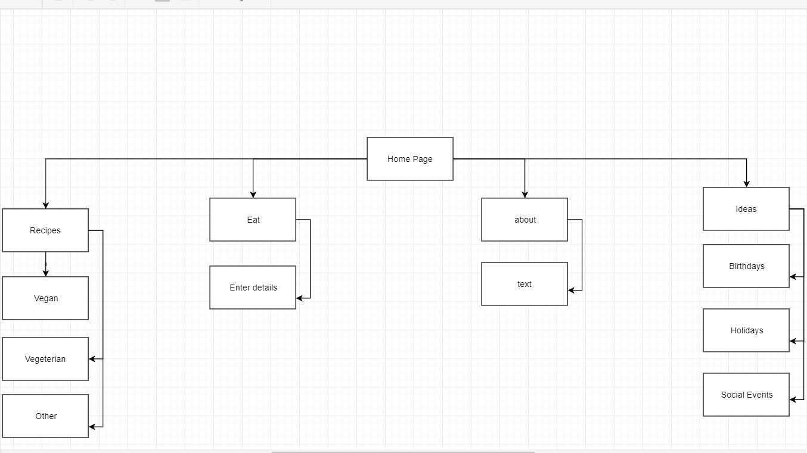
Wireframes
Index
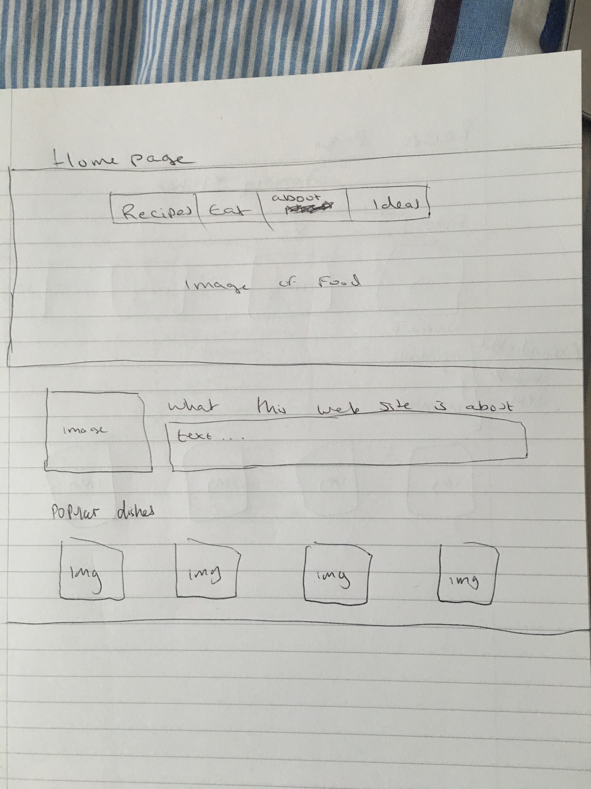
Recipe
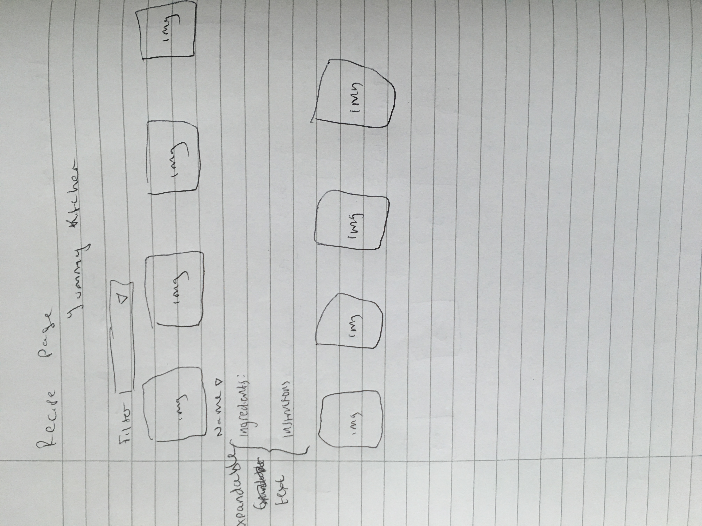
Eat
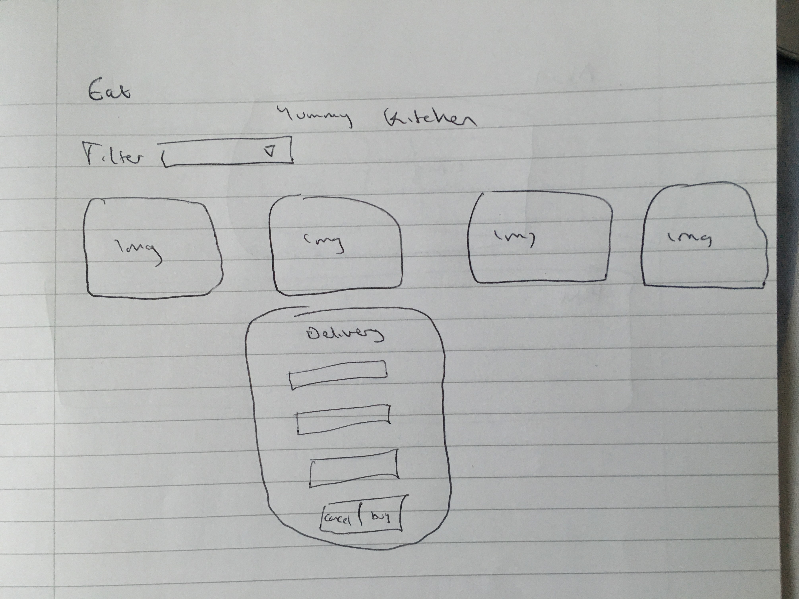
About
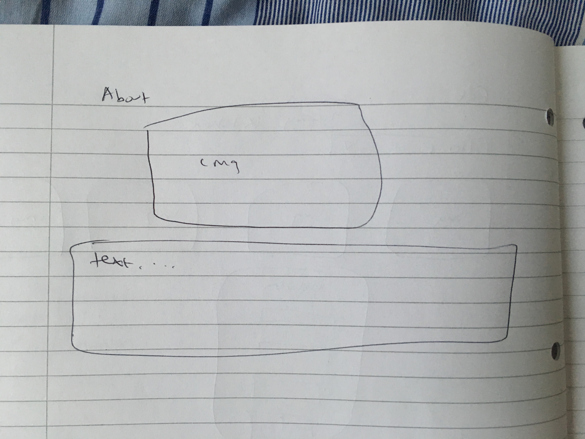
idea
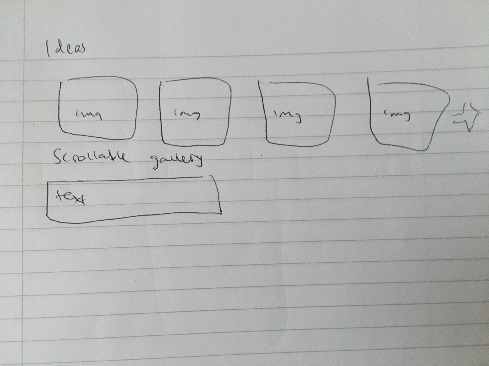
As you can see the final version of the wbesite looks slightly different than the wireframes. For example, i changed the filter button in the recipe and eat pages and the images on the idea page scroll horizontally rather vertically. The reasons for these changes is that it was much easier for me to code the changes than the original versions. Also the index page has changed. This is because i felt that it looked much better that what i originally had planned.
Mockups
Homepage
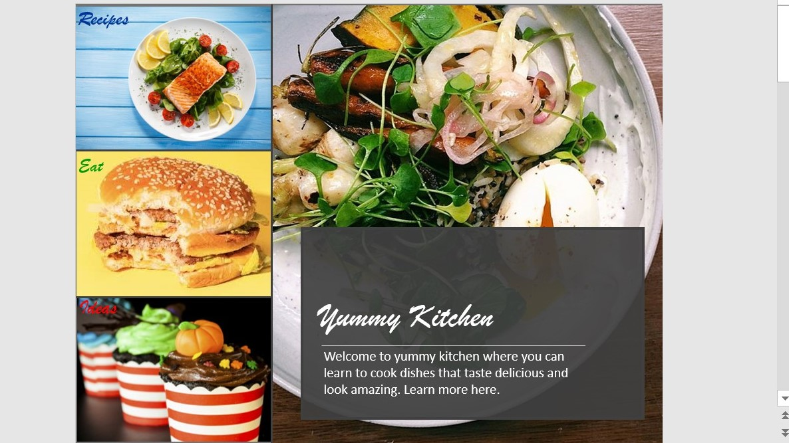
Recipes
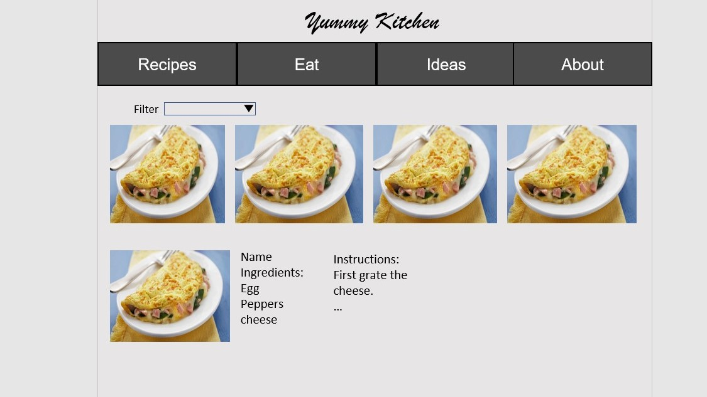
Eat
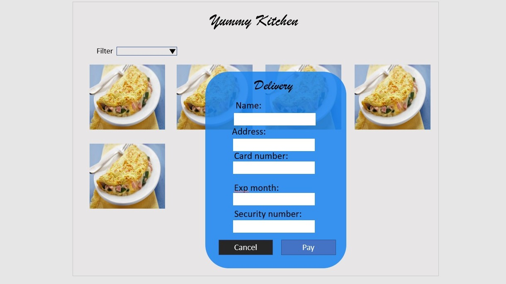
About
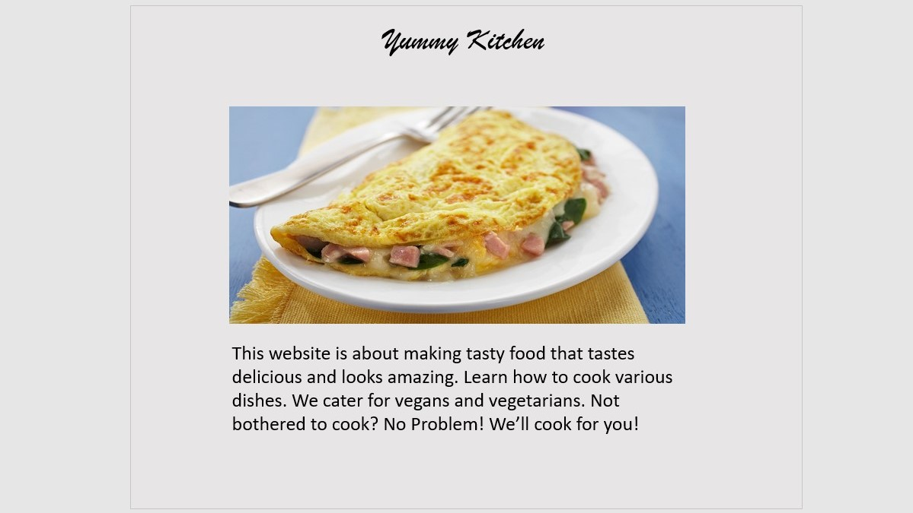
Ideas
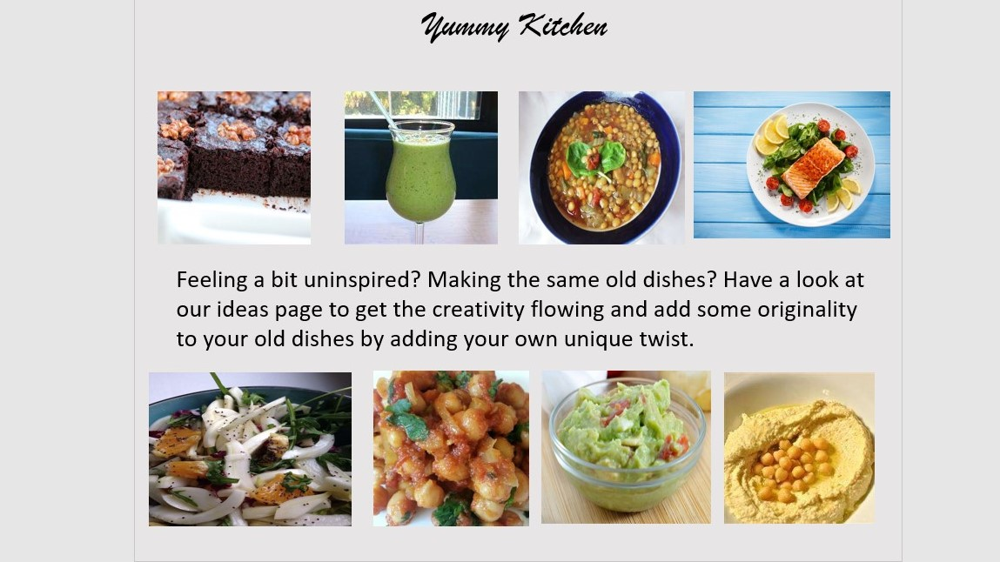